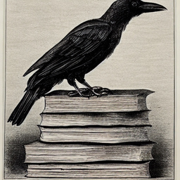

_________________________________________________________________________________________________________________________________________________
- J-J. Godeme, J. Fadili, G. Soriano, M. Zerrad, M. Lequime, and C. Amra. Stable Phase Retrieval with mirror descent.,(To be submitted), 2023.
- X. Buet, M. Zerrad, M. Lequime, G. Soriano, J.-J. Godeme, M.J. Fadili, C. Amra,
Instantaneous measurement of surface roughness spectra
using white light scattering projected on a spectrometer,hal-03925658, 2023.
- J-J. Godeme, J. Fadili, X. Buet, M. Zerrad, M. Lequime, and C. Amra. Provable phase retrieval with mirror descent.
arXiv:2210.09248, 2022.
- X. Buet, M. Zerrad, M. Lequime, G. Soriano, J.-J. Godeme, M.J. Fadili, C. Amra,
Immediate and one-point roughness measurements using
spectrally shaped light, Optics Express, Vol. 30, No. 10, pp. 16078-16093, 2022.
Link